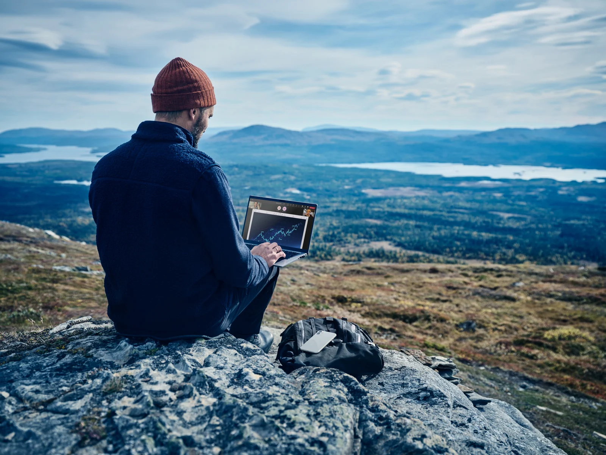
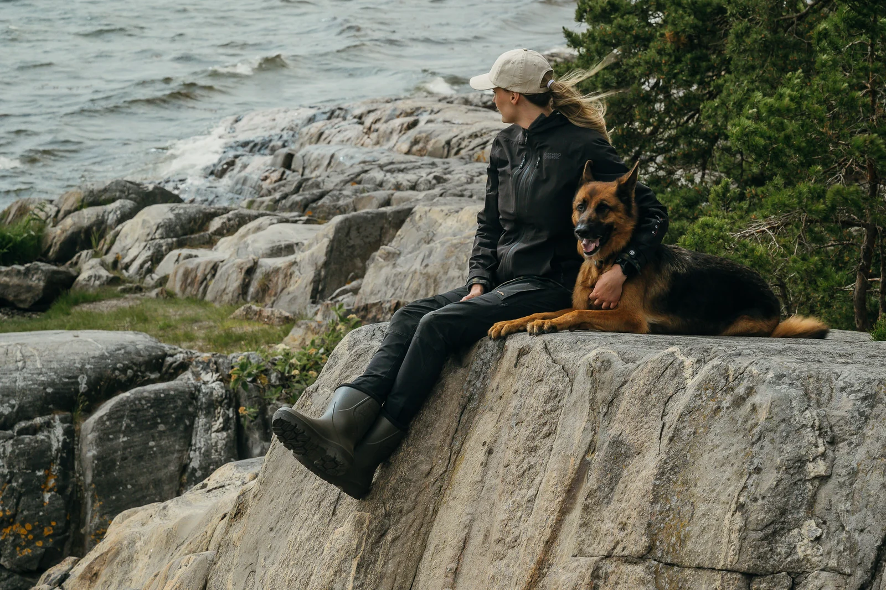
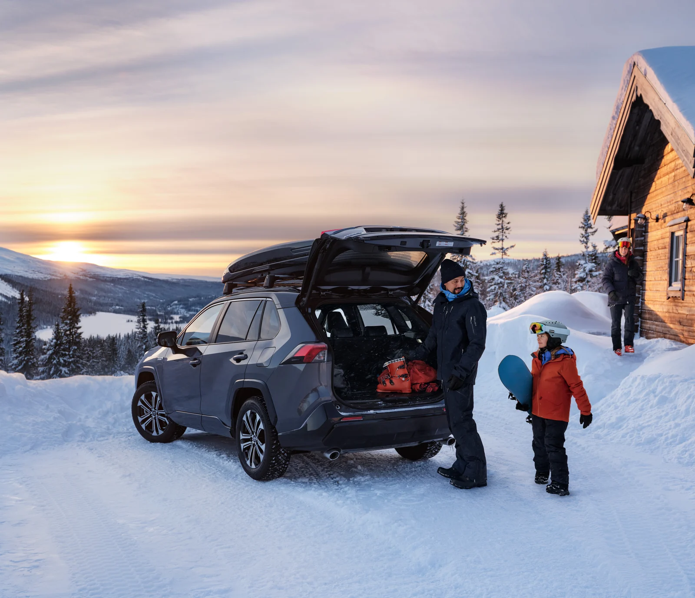
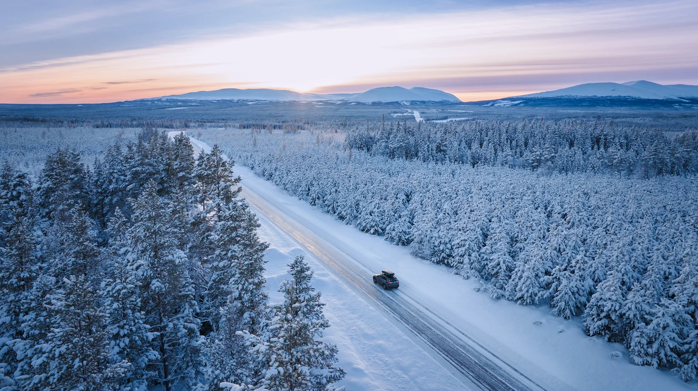

Stylist/Casting
Människan. Miljön. Uttrycket.
Med erfarenhet av mode och trender arbetar vi med styling av modeller och miljöer. Vi hjälper också till med förslag på modeller och locations, så att människorna och platsen ger projektet rätt uttryck.

Ett urval av våra arbeten.
Välj en bild för att se den i sin helhet.



